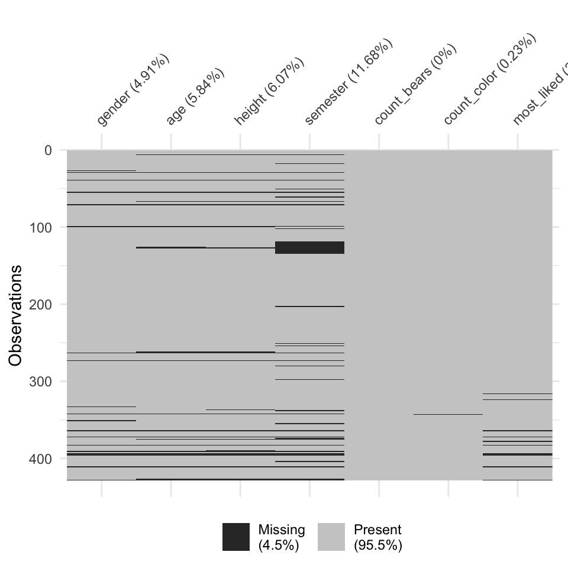
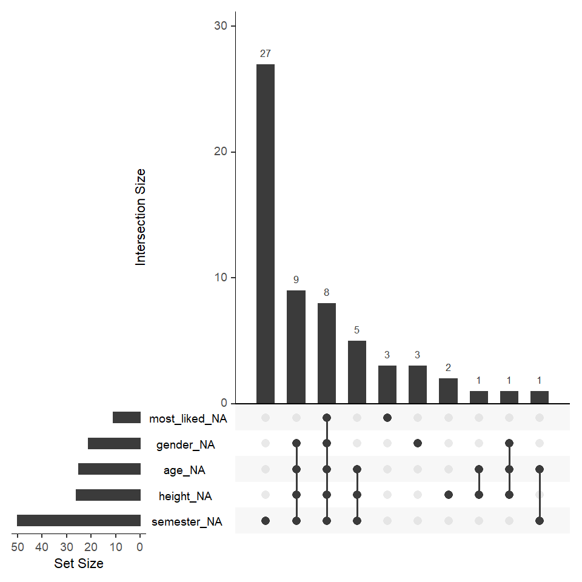
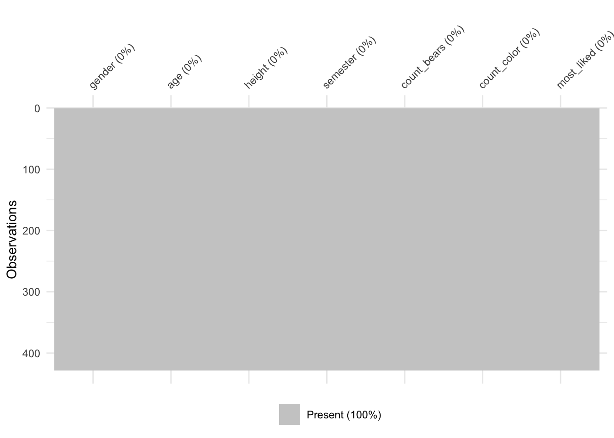
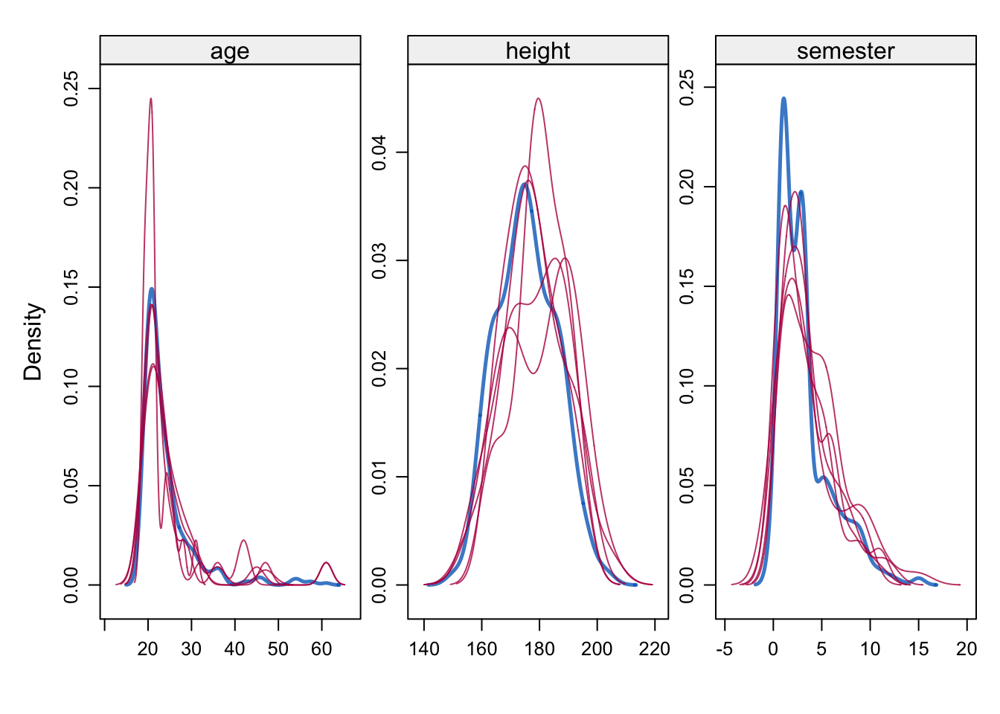

37 Imputation fehlender Werte
Version vom October 25, 2022 um 11:46:22

37.1 Was sind fehlende Werte?
Wir beschränken uns hier auf zwei Arten von fehlenden Daten. Es gibt noch mehr Abstufungen, aber für den Einstieg reicht es, wenn wir nach zwei Typen von fehlenden Daten unterscheiden:
- MCAR (eng. missing completely at random): völlig zufällig fehlende Daten. Dies ist das wünschenswerte Szenario im Falle fehlender Daten. Fehlende Werte werden als missing completely at random bezeichnet, wenn die Wahrscheinlichkeit für das Fehlen eines Wertes weder von erfassten noch unerfassten Merkmalen abhängt. Daher kann man sagen, dass MCAR-Werte die Fallzahl reduzieren, aber das Studienergebnis nicht verzerren.
- MAR (eng. missing at random): Fehlende Werte werden als missing at random bezeichnet, wenn die Wahrscheinlichkeit für das Fehlen eines Wertes von einem anderen Merkmal abhängt aber nicht von der Ausprägung des fehlenden Merkmals selbst. MAR-Werte reduzieren die Fallzahl und verzerren möglicherweise das Studienergebnis.
- MNAR (eng. missing not at random): nicht zufällig fehlende Daten. Fehlende, nicht zufällige Daten sind ein schwerwiegenderes Problem, und in diesem Fall kann es ratsam sein, den Datenerhebungsprozess weiter zu überprüfen und zu versuchen zu verstehen, warum die Informationen fehlen. Wenn zum Beispiel die meisten Teilnehmer einer Umfrage eine bestimmte Frage nicht beantwortet haben, warum haben sie das getan? War die Frage unklar? Daher werden fehlende Werte als missing not at random bezeichnet, wenn die Wahrscheinlichkeit für das Fehlen eines Wertes von der Ausprägung des fehlenden Merkmals selbst abhängt. MNAR-Werte reduzieren die Fallzahl und verzerren das Studienergebnis. MNAR sind Non-ignorable missings und müssen auch berichtet werden.
Die Struktur der fehlenden Werte lässt sich meist schwer vorhersagen. Es gibt häufig Mischformen: MCAR, MAR, MNAR sind ineinander verwoben.
Unter der Annahme, dass es sich bei den Daten um MCAR handelt, können auch zu viele fehlende Daten ein Problem darstellen. In der Regel liegt die sichere Obergrenze bei großen Datensätzen bei 5 % der Gesamtmenge. Wenn die fehlenden Daten für ein bestimmtes Merkmal oder eine Stichprobe mehr als 5 % betragen, sollten Sie dieses Merkmal oder diese Stichprobe wahrscheinlich weglassen. Wir prüfen daher mit einer einfachen Funktion, ob in den Merkmalen (Spalten) und Stichproben (Zeilen) mehr als 5 % der Daten fehlen
37.2 Genutzte R Pakete für das Kapitel
Wir wollen folgende R Pakete in diesem Kapitel nutzen.
pacman::p_load(tidyverse, magrittr, see, readxl,
mice, naniar)Am Ende des Kapitels findest du nochmal den gesamten R Code in einem Rutsch zum selber durchführen oder aber kopieren.
37.3 Daten für Verteilungen
Damit wir uns auch eine Verteilung anschauen können bruachen wir viele Beobachtungen. Wir haben das ja schon bei den Histogrammen gesehen, wenn wir ein aussagekräftiges Histogramm erstellen wollen, dann brauchen wir viele Beobachtungen. Daher nehmen wir für dieses Kapitel einmal den Gummibärchendatensatz und schauen uns dort die Variablen gender, height, count_bears und count_color einmal genauer an. Wie immer nutzen wir die Funktion select() um die Spalten zu selektieren. Abschließend verwandeln wir das Geschlecht gender und das module noch in einen Faktor.
gummi_tbl <- read_excel("data/gummibears.xlsx") %>%
select(gender, age, height, semester, count_bears, count_color,
most_liked) %>%
mutate(gender = as_factor(gender),
most_liked = as_factor(most_liked),
count_color = as_factor(count_color))Wir nutzen jetzt die Daten einmal um uns die Normalverteilung und die Poissonverteilung am Beispiel näher anzuschauen.
37.4 Imputation von fehlenden Werten
https://yuzar-blog.netlify.app/posts/2021-03-04-how-to-impute-missing-values-in-r/
https://www.analyticsvidhya.com/blog/2016/03/tutorial-powerful-packages-imputing-missing-values/
http://juliejosse.com/wp-content/uploads/2018/06/DataAnalysisMissingR.html#1)regression_with_na(quantitative)_for_ozone
37.4.1 Visualisierung von fehlenden Werten


37.5 Mean oder Median Imputation
37.6 Most frequent Imputation
37.7 Imputation mit mice
imp_method <- c(gender = "logreg", age = "pmm", height = "pmm", semester = "pmm",
count_bears = "", count_color = "polyreg", most_liked = "polyreg")
imp_gummi_tbl <- mice(data = gummi_tbl, m = 5, maxit = 5,
method = imp_method)
iter imp variable
1 1 gender age height semester count_color most_liked
1 2 gender age height semester count_color most_liked
1 3 gender age height semester count_color most_liked
1 4 gender age height semester count_color most_liked
1 5 gender age height semester count_color most_liked
2 1 gender age height semester count_color most_liked
2 2 gender age height semester count_color most_liked
2 3 gender age height semester count_color most_liked
2 4 gender age height semester count_color most_liked
2 5 gender age height semester count_color most_liked
3 1 gender age height semester count_color most_liked
3 2 gender age height semester count_color most_liked
3 3 gender age height semester count_color most_liked
3 4 gender age height semester count_color most_liked
3 5 gender age height semester count_color most_liked
4 1 gender age height semester count_color most_liked
4 2 gender age height semester count_color most_liked
4 3 gender age height semester count_color most_liked
4 4 gender age height semester count_color most_liked
4 5 gender age height semester count_color most_liked
5 1 gender age height semester count_color most_liked
5 2 gender age height semester count_color most_liked
5 3 gender age height semester count_color most_liked
5 4 gender age height semester count_color most_liked
5 5 gender age height semester count_color most_likedcomplete(imp_gummi_tbl) %>% vis_miss()
imp_all_gummi_tbl <- imp_gummi_tbl %>%
complete("long", include = TRUE) %>%
select(-.id, imp_run = .imp) densityplot(imp_gummi_tbl)
pooled_res <- imp_gummi_tbl %>%
mice::complete("all") %>%
map(lm, formula = height ~ age + semester + gender) %>%
pool()
37.8 Was macht pool?
37.9 missForest
37.10 Sensitivitätsanalysen
Vergleich verschiedener Imputationsmethoden Vergleich mit complete-case Analyse